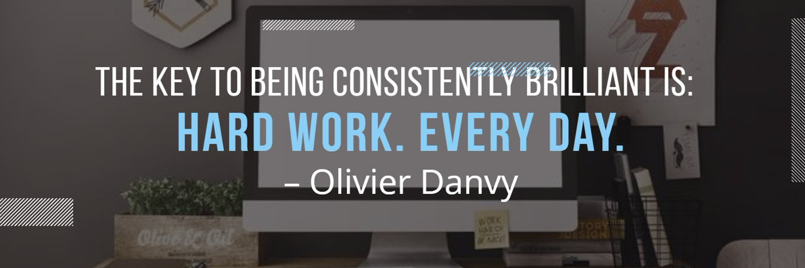

Benali djamel
[Developer, Thinker, Confident, Advisor , Calm, Introvert, Leader, Observer, Learner,Sufism, null]
[Developer, Thinker, Confident, Advisor , Calm, Introvert, Leader, Observer, Learner,Sufism, null]


What's the best alternative to indexOf() d dqdfqs for checking existence of element in an array erfs ze zer zaerazr az ?
In most languages, indexOf() returns -1 if element is not found, which IMO is a bit counter productive. What's the best alternative to this...
What's the best alternative to indexOf() d dqdfqs for checking existence of element in an array erfs ze zer zaerazr az ?
In most languages, indexOf() returns -1 if element is not found, which IMO is a bit counter productive. What's the best alternative to this...